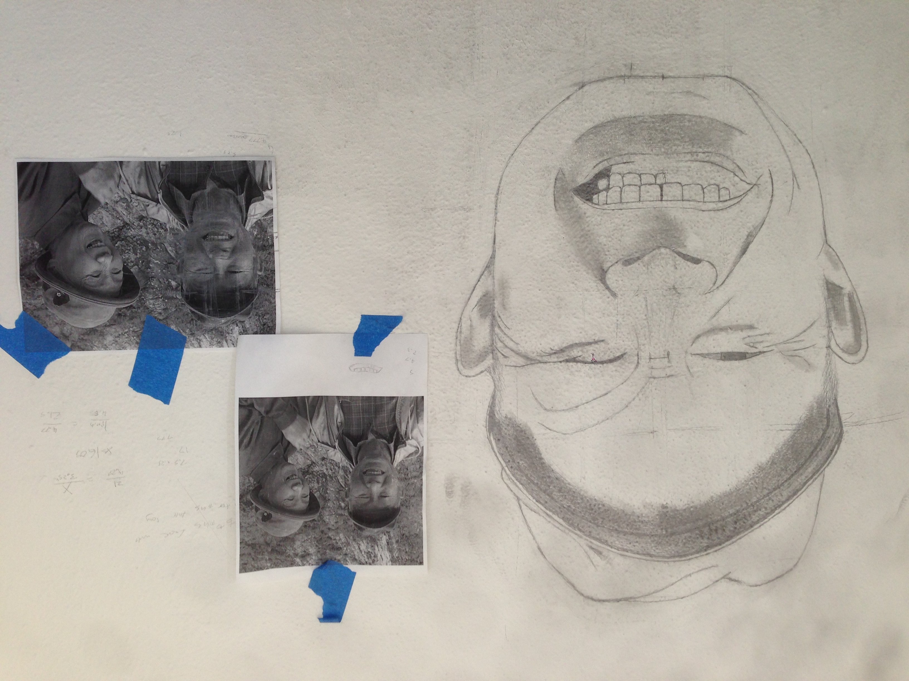
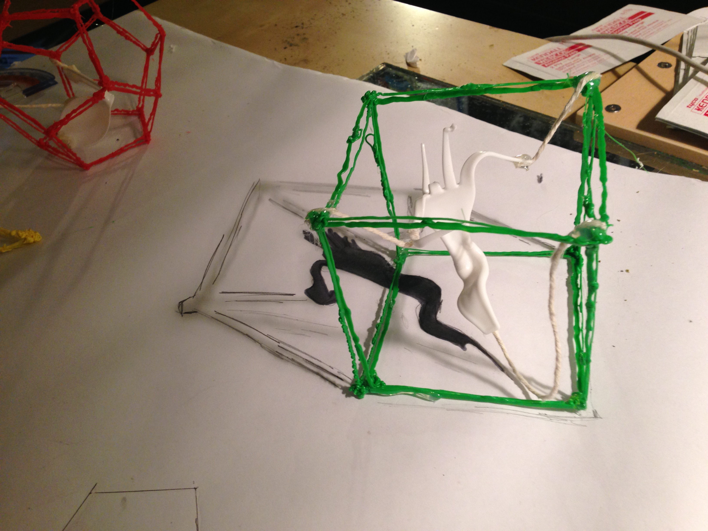
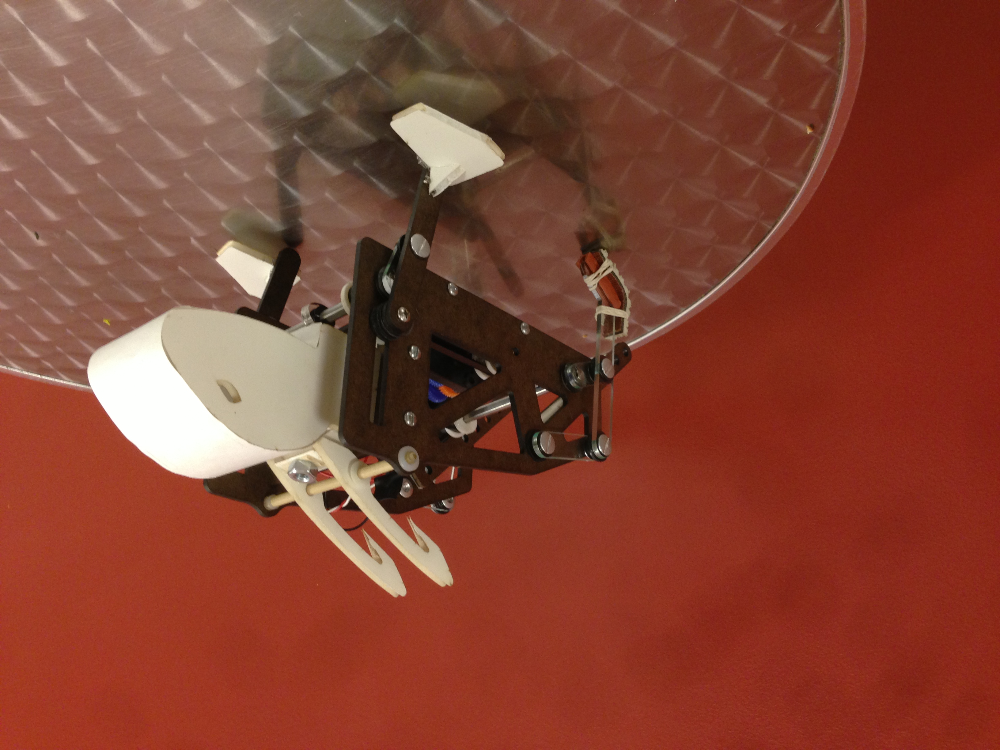
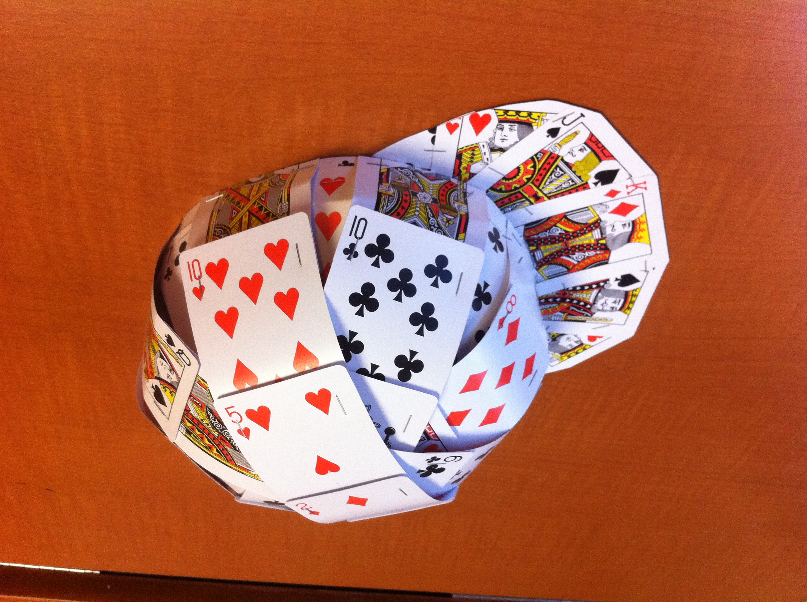

Congratulations you made it all the way to this last page!
These are some extra projects that I've worked on in the past. I used to be really into art and sketching all the way back in elementary and middle school so that side of me has bled into some of the things here. Thanks for taking a look at my work and please feel free to reach out to me with any questions or comments!
A sketch of my japanese grandfather who is my main inspiration and role model.
It might not look like it but the white plastic runner encased in the green cube is a melted picnic fork!
For my first mechatronics class ever my team created Batbot. I loved this class (ME 210) and the experience convinced me to specialize in mechatronics for my master degree.
A mechanical bunny my group created for a machine design class (ME 112). It's got a pin slider for its front legs, four bar linkage for its rears, and a cam actuating its ears.
I was bored one winter break so I found plans for an adirondack chair online and built it for my first wood working project. Was a bit tricky because the only saw I had was jigsaw but it was a blast.
This assignment was to create a hat out of unconventional materials so I made one out of playing cards!